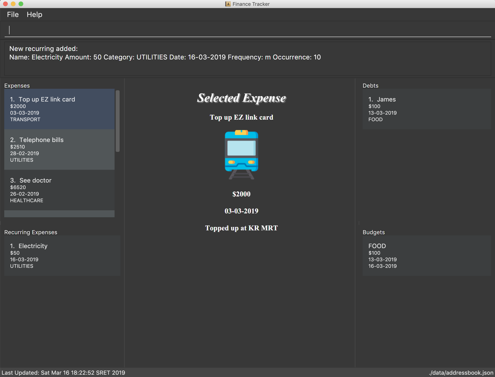

By: CS2103-AY1819S2-W15-2 Since: Feb 2019
- 1. Introduction
- 2. Quick Start
- 3. Features
- 3.1. Viewing help :
help - 3.2. Listing expenses :
list - 3.3. Adding an expense:
add - 3.4. Editing an expense :
edit - 3.5. Deleting an expense :
delete - 3.6. Adding a budget :
addbudget - 3.7. Editing a budget:
editbudget - 3.8. Deleting a budget:
deletebudget - 3.9. Listing debts:
listdebt - 3.10. Adding a debt:
adddebt - 3.11. Editing a debt:
editdebt - 3.12. Deleting a debt:
deletedebt - 3.13. Paying off a debt:
paydebt - 3.14. Adding a recurring:
addrecurring - 3.15. Editing a recurring :
editrecurring - 3.16. Deleting a recurring:
deleterecurring - 3.17. Viewing Statistics:
stats - 3.18. Viewing Macro Statistics Trend:
stats_mt - 3.19. Viewing Macro Statistics Compare:
stats_mc - 3.20. Listing entered commands :
history - 3.21. Undoing previous command :
undo - 3.22. Redoing the previously undone command :
redo - 3.23. Clearing all entries :
clear - 3.24. Exiting the program :
exit - 3.25. Saving the data
- 3.26. Email reminders
[coming in v2.0]
- 3.1. Viewing help :
- 4. FAQ
- 5. Command Summary
1. Introduction
Personal Finance Tracker is for those who prefer to use a desktop app for expense tracking. More importantly, Personal Finance Tracker is optimized for those who prefer to work with a Command Line Interface (CLI) while still having the benefits of a Graphical User Interface (GUI). Whether if you are an expert user or a non tech savvy user, we have commands that cater towards you guys!Interested? Jump to the Section 2, “Quick Start” to get started. Enjoy!
2. Quick Start
-
Ensure you have Java version
9or later installed in your Computer. -
Download the latest
main.jarhere. -
Copy the file to the folder you want to use as the home folder for your Personal Finance Tracker.
-
Double-click the file to start the app. The GUI should appear in a few seconds.
 -
Type the command in the command box and press Enter to execute it.
e.g. typinghelpand pressing Enter will open the help window. -
Some example commands you can try:
-
listv/all: lists all contacts -
addn/Sofa $/200 c/HOME: adds an expense namedSofaof amount$200and category ofHOMEto the Finance Tracker. -
delete3: deletes the 3rd expense shown in the current list -
exit: exits the app
-
-
Refer to Section 3, “Features” for details of each command.
3. Features
Command Format
-
Words in
UPPER_CASEare the parameters to be supplied by the user e.g. inadd n/NAME,NAMEis a parameter which can be used asadd n/Hamburger. -
Items in square brackets are optional e.g
n/NAME [t/TAG]can be used asn/Hamburger t/lunchor asn/Hamburger. -
Items with
… after them can be used multiple times including zero times e.g.[t/TAG]…can be used ast/lunch,t/lunch t/happy houretc. -
Parameters can be in any order e.g. if the command specifies
n/NAME $/AMOUNT c/CATEGORY,$/AMOUNT c/CATEGORY n/NAMEis also acceptable. -
We take into account non-tech savvy users and offer alternative command format that prompts users to add parameters step by step.
e.g. When adding an expense, instead of inputting an entire line of command such asadd n/NAME $/AMOUNT c/CATEGORY [d/DATE] [r/REMARK](Format 1), we also allow user to type in commandaddand prompts the user to input each parameter one by one. (Format 2).
3.1. Viewing help : help
Format: help
3.2. Listing expenses : list
Shows a list of expenses in the finance tracker according to the view specified.
Format: list v/VIEW
|
3.3. Adding an expense: add
Adds an expense to the finance tracker.
Format 1: add n/NAME $/AMOUNT c/CATEGORY [d/DATE] [r/REMARK]
|
Examples:
-
add n/BKT $/3.00 c/food d/13-01-1996 r/My weekly bak kut teh intake. -
add n/Sofa $/200 c/HOME
Format 2: add
| You can omit (optional) parameters by leaving them empty. |
Examples:
-
add
Please enter the name of the expense: BKT
Please enter the amount of the expense: 3.00
Please enter the category of the expense: food
Please enter the date of the expense (optional):
Please enter the remark of the expense (optional):
3.4. Editing an expense : edit
Edits an existing expense in the finance tracker.
Format 1: edit INDEX [n/NAME] [$/AMOUNT] [c/CATEGORY] [d/DATE] [r/REMARK]
|
Examples:
-
edit 9 $/450 c/food
Edits the amount and category of the 9th expense to be450andfoodrespectively.
Format 2: edit INDEX
| You can omit (optional) parameters by leaving them empty. If all parameters are empty, no edits will occur. |
Examples:
edit 9
Please enter the name of the expense to be updated (optional):
Please enter the amount of the expense to be updated (optional): 450
Please enter the category of the expense to be updated (optional): food
Please enter the date of the expense to be updated (optional):
Please enter the remark of the expense to be updated (optional):
3.5. Deleting an expense : delete
Deletes the specified expense from the finance tracker.
Format: delete INDEX
|
Examples:
-
list
delete 2
Deletes the 2nd expense in the finance tracker.
3.6. Adding a budget : addbudget
Adds a budget with a time frame to the tracker.
Format 1: addbudget $/AMOUNT c/CATEGORY sd/START_DATE ed/END_DATE
|
Examples:
-
addbudget c/food $/400 sd/1-2-2019 ed/28-2-2019 -
addbudget c/all $/12000 sd/1-1-2019 ed/31-12-2019
Format 2: addbudget
Examples:
-
addbudget
Please enter the category of the budget: food
Please enter the amount of the budget: 400
Please enter the start date of budget: 1-2-2019
Please enter the end date of budget: 28-2-2019
3.7. Editing a budget: editbudget
Edits a budget in the finance tracker.
Format 1: editbudget c/CATEGORY [$/AMOUNT] [sd/NEW_START_DATE] [ed/NEW_END_DATE]
Examples:
-
editbudget c/food $/500 -
editbudget c/all ed/31-3-2019 -
editbudget c/all $/5000 sd/1-1-2019 ed/31-3-2019
Format 2: editbudget
Examples:
editbudget
Please enter the category of the budget to be updated: food
Please enter the amount of the budget to be updated (optional):
Please enter the start date of budget to be updated (optional):
Please enter the end date of budget to be updated (optional):
3.8. Deleting a budget: deletebudget
Deletes a budget from the finance tracker.
Format: deletebudget c/CATEGORY
Examples:
-
deletebudget c/food
3.9. Listing debts: listdebt
Shows a list of debts in the finance tracker according to the view specified.
Format: listdebt [v/VIEW]
|
3.10. Adding a debt: adddebt
Adds a debt to the finance tracker.
Format 1: adddebt n/PERSON_OWED $/AMOUNT_OWED c/CATEGORY [d/DEADLINE] [r/REMARK]
|
Examples:
-
adddebt n/John Doe $/50.00 c/shopping d/25-02-2019 r/Loan from John to finance my new earphones -
adddebt n/Jane Doe $/200 c/FOOD
Format 2: adddebt
| You can omit (optional) parameters by leaving them empty. |
Examples:
-
adddebt
Please enter the name of the person you owed: John Doe
Please enter the amount owed : 50.00
Please enter the category: shopping
Please enter the deadline of the debt (optional): 25-02-2019
Please enter the remark of the debt (optional): Loan from John to finance my new earphones.
3.11. Editing a debt: editdebt
Edits debt at specified INDEX based on latest debt list shown and updates values of parameters.
Format 1: editdebt INDEX [n/PERSON_OWED] [$/AMOUNT_OWED] [c/CATEGORY] [d/DEADLINE] [r/REMARK]
|
Examples:
-
editdebt 5 n/Tommy $/60Edits person owed and amount owed of the 5th debt to beTommyand$60respectively.
Format 2: editdebt
| You can omit (optional) parameters by leaving them empty. If all parameters are empty, no edits will occur. |
Examples:
-
editdebt 5
Please enter the updated name of the person you owed (optional): Tommy
Please enter the updated amount owed (optional): 60.00
Please enter the updated category (optional):
Please enter the updated deadline of the debt (optional):
Please enter the updated remark of the debt (optional):
3.12. Deleting a debt: deletedebt
Deletes the specified debt from the finance tracker.
Format: deletedebt INDEX
|
Examples:
-
listdebt
deletedebt 5
Deletes the 5th debt in the finance tracker.
3.13. Paying off a debt: paydebt
Convert the debt record to an expense.
Format: paydebt INDEX [d/DATE]
|
Examples:
-
listdebt
paydebt 3
Converts the 3rd debt in the finance tracker into an expense.
3.14. Adding a recurring: addrecurring
Adds a recurring payment to the finance tracker.
Format 1: addrecurring n/NAME $/AMOUNT c/CATEGORY f/FREQUENCY o/OCCURENCES [d/STARTDATE] [r/REMARK]
|
Examples:
-
addrecurring n/Phone Bill $/50.00 c/utilities f/M o/24 d/23-2-2019 r/Signed a new 2 year contract. -
addrecurring n/Magazine Subscription $/20 c/utilities f/M2 o/12
Format 2: addrecurring
| You can omit (optional) parameters by leaving them empty. |
Examples:
-
addrecurring
Please enter the name of the recurring: Magazine Subscription
Please enter the amount of the recurring: 20
Please enter the category of the recurring: utilities
Please enter the frequency of the recurring: M2
Please enter the number of occurences of the recurring: 12
Please enter the start date of the recurring (optional):
Please enter the remark of the expense (optional):
3.15. Editing a recurring : editrecurring
Edits an existing recurring in the finance tracker.
Format 1: editrecurring INDEX p/EDITPAST [n/NAME] [$/AMOUNT] [c/CATEGORY] [f/FREQUENCY] [o/OCCURENCES] [d/STARTDATE] [r/REMARK]
|
Examples:
-
editrecurring 9 p/N $/450 c/food
Edits the amount and category of the 9th recurring to be450andfoodrespectively. No changes will be made to old expenses already added by this recurring.
Format 2: editrecurring INDEX p/EDITPAST
| You can omit (optional) parameters by leaving them empty. If all parameters are empty, no edits will occur. |
Examples:
editrecurring 9 p/N
Please enter the name of the recurring to be updated (optional):
Please enter the amount of the recurring to be updated (optional): 450
Please enter the category of the recurring to be updated (optional): food
Please enter the frequency of the recurring to be updated (optional):
Please enter the number of occurences of the recurring to be updated (optional):
Please enter the start date of the recurring to be updated (optional):
Please enter the remark of the expense to be updated (optional):
3.16. Deleting a recurring: deleterecurring
Deletes the specified recurring from the finance tracker.
Format: deleterecurring INDEX p/DELETEPAST
|
Examples:
-
listrecurring
deleterecurring 2 p/N
Deletes the 2nd recurring in the finance tracker, without deleting old expenses already added by this recurring.
3.17. Viewing Statistics: stats
Produces statistics regarding the user’s finance.
Format:
stats [m/MODE] [vr/VISUAL_REPRESENTATION] [sd/START_DATE] [ed/END_DATE] [c/CATEGORY]
|
Examples:
-
stats -
stats m/cat -
stats m/cat vr/pie -
stats m/day sd/12-02-2018 -
stats m/frequency sd/01-01-2019 ed/01-02-2019 vr/bar c/food
3.18. Viewing Macro Statistics Trend: stats_mt
Produces statistics regarding user’s finance for 2 or more time periods.
Format: stats_mt sd/START_DATE ed/END_DATE p/PERIOD [vr/VISUAL_REPRESENTATION] [c/CATEGORY]
|
If VISUAL_REPRESENTATION field is left empty, vr options will be displayed. |
Examples:
-
stats_mt sd/01-01-2018 ed/01-01-2018 p/month -
stats_mt sd/01-01-2018 ed/01-01-2018 p/14 -
stats_mt sd/01-01-2018 ed/01-01-2018 p/month vr/line c/food
3.19. Viewing Macro Statistics Compare: stats_mc
Produces statistics regarding the user’s finance for 2 or more time periods.
Format: stats_mc d1/DATE_1 d2/DATE_2 [d#/DATE#] p/PERIOD [vr/VISUAL_REPRESENTATION] [c/CATEGORY]
|
If VISUAL_REPRESENTATION field is left empty, vr options will be displayed |
Examples:
-
stats_mc d1/01-01-2019 d2/01-02-2019 p/month -
stats_mc d1/01-01-2019 d2/07-01-2019 d3/07-01-2019 d4/13-02-2019 p/7 -
stats_mc d1/01-01-2018 d2/01-01-2018 p/month vr/pie c/food
3.20. Listing entered commands : history
Lists all the commands that you have entered, along with its index, in reverse chronological order.
Format: history
|
Pressing the ↑ and ↓ arrows will display the previous and next input respectively in the command box. |
3.21. Undoing previous command : undo
Restores the finance tracker to the state before the previous undoable command was executed.
Format: undo
|
Undoable commands: those commands that modify the finance tracker’s content ( |
Examples:
-
delete 1
list
undo(reverses thedelete 1command) -
select 1
list
undo
Theundocommand fails as there are no undoable commands executed previously. -
delete 1
clear
undo(reverses theclearcommand)
undo(reverses thedelete 1command)
3.22. Redoing the previously undone command : redo
Reverses the most recent undo command.
Format: redo
Examples:
-
delete 1
undo(reverses thedelete 1command)
redo(reapplies thedelete 1command) -
delete 1
redo
Theredocommand fails as there are noundocommands executed previously. -
delete 1
clear
undo(reverses theclearcommand)
undo(reverses thedelete 1command)
redo(reapplies thedelete 1command)
redo(reapplies theclearcommand)
3.23. Clearing all entries : clear
Clears all entries from the finance tracker.
Format: clear
3.24. Exiting the program : exit
Exits the program.
Format: exit
3.25. Saving the data
Finance tracker data are saved in the hard disk automatically after any command that changes the data.
There is no need to save manually.
3.26. Email reminders [coming in v2.0]
{Sends an email if the expenses are about to exceed the budget or when debts are due.}
4. FAQ
Q: How do I transfer my data to another Computer?
A: Install the app in the other computer and overwrite the empty data file it creates with the file that contains the data of your previous Financial Tracker folder.
5. Command Summary
-
Add
add n/NAME $/AMOUNT c/CATEGORY [d/DATE] [r/REMARK]
e.g.add n/BKT $/3.00 c/food d/13-01-1996 r/My weekly bak kut teh intake -
Clear :
clear -
Delete :
delete INDEX
e.g.delete 3 -
Edit :
edit INDEX [n/NAME] [$/AMOUNT] [c/CATEGORY] [d/DATE] [r/REMARK]
e.g.edit 2 n/Bak Kut Teh -
List :
list -
Help :
help -
History :
history -
Undo :
undo -
Redo :
redo -
Add a budget :
addbudget $/AMOUNT c/CATEGORY sd/START_DATE ed/END_DATE
e.g.addbudget c/food $/400 sd/1-2-2019 ed/28-2-2019 -
Edit a budget :
editbudget c/CATEGORY [$/AMOUNT] [sd/NEW_START_DATE] [ed/NEW_END_DATE]
e.g.editbudget c/all $/5000 sd/1-1-2019 ed/31-3-2019 -
Delete a budget :
deletebudget c/CATEGORY
e.g.deletebudget c/food -
Add a debt :
adddebt n/PERSON_OWED $/AMOUNT_OWED c/CATEGORY [d/DEADLINE] [r/REMARK]
e.g.adddebt n/Jane Doe $/200 c/FOOD -
Edit a debt :
editdebt INDEX [n/PERSON_OWED] [$/AMOUNT_OWED] [c/CATEGORY] [d/DEADLINE] [r/REMARK]
e.g.editdebt 5 n/Tommy $/60 -
List debts :
listdebt [v/VIEW] -
Delete a debt :
deletedebt INDEX
e.g.deletedebt 5 -
Pay off debt :
paydebt INDEX [d/DATE]
e.g.payDebt 2 -
Add a recurring :
addrecurring n/NAME $/AMOUNT c/CATEGORY f/FREQUENCY o/OCCURENCES [d/STARTDATE] [r/REMARK]
e.g.addrecurring n/Phone Bill $/50.00 c/utilities f/M o/24 d/23-2-2019 r/Signed a new 2 year contract. -
Edit a recurring :
editrecurring INDEX p/EDITPAST [n/NAME] [$/AMOUNT] [c/CATEGORY] [f/FREQUENCY] [o/OCCURENCES] [d/STARTDATE] [r/REMARK]
e.g.editrecurring 9 p/N $/450 c/food -
Delete a recurring :
deleterecurring INDEX p/DELETEPAST
e.g.deleterecurring 2 p/N -
Viewing statistics :
stats [m/MODE] [vr/VISUAL_REPRESENTATION] [sd/START_DATE] [ed/END_DATE] [c/CATEGORY]
e.g.stats c/frequency sd/01-01-2019 ed/01-02-2019 vr/bar c/food -
Viewing Macro Statistic Trend :
stats_mt sd/START_DATE ed/END_DATE p/PERIOD [vr/VISUAL_REPRESENTATION] [c/CATEGORY]
e.g.stats_mt sd/01-01-2018 ed/01-01-2018 p/month vr/line c/food -
Viewing Macro Statistic Comparison :
stats_mc d1/DATE_1 d2/DATE_2 [d#/DATE#] p/PERIOD [vr/VISUAL_REPRESENTATION] [c/CATEGORY]
e.g.stats_mc d1/01-01-2018 d2/01-01-2018 p/month vr/pie c/food